◆舉辦期間◆
2018年5月30日(三) 17:00～6月13日(三) 11:59

舉辦容易取得特定的技能強化＆靈基再臨素材的關卡「狩獵關卡」！
特定敵人做為對象的狩獵關卡依序在迦勒底之門出現。
詳情請在此處的公告確認。
◆舉辦期間◆
2018年5月30日(三) 17:00～6月6日(三) 11:59
|
為了記念「1300萬DL突破宣傳活動」舉辦，實施特別登入獎勵。 ◆舉辦期間◆ |
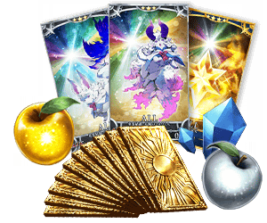 |
◆贈送對象◆
2018年6月6日(三) AM2:59前通過「特異點F 炎上汙染都市 冬木」的Master對象
| 連續登入天數 | 贈送內容 | |
|---|---|---|
| 第1天 | 叡智的猛火 ALL★4(SR) 10張 | |
| 第2天 | 白銀果實 10個 | |
| 第3天 | 1,000萬QP | |
| 第4天 | 英靈結晶・星之芙芙ALL★3(HP) 10張 | |
| 第5天 | 英靈結晶・太陽之芙芙ALL★3(ATK) 10張 | |
| 第6天 | 黃金果實 10個 | |
| 第7天 | 呼符 10張(聖晶石召喚10次份) | |
※第1天的登入獎勵會從5月31日(四) AM3:00配發。
※之後的登入獎勵會在每天AM3:00配發。
※連續登入天數中斷的話，無法領取之後的禮物。
※最多能領取7次，但根據成為贈送對象的時間點，可能無法到此上限。
※在上述時間前，於管理室(ターミナル)畫面的關卡橫幅必須要有「CLEAR」的文字顯示。
在進行Servant及概念禮裝的強化時，大成功(經驗值2倍加成)・極大成功(經驗值3倍加成)發生機率以期間限定變成2倍！
無論如何藉此機會強化中意的Servant和概念禮裝吧！
◆舉辦期間◆
2018年5月30日(三) 17:00～6月6日(三) 11:59
強化Servant及概念禮裝時所需的QP消耗量，以期間限定變成1/2！
配合大成功＆極大成功發生率2倍，千萬別錯過這超值機會！
◆舉辦期間◆
2018年5月30日(三) 17:00～6月6日(三) 11:59
※請注意Servant技能強化、靈基再臨(Servant進化)、Servant寶具強化、聖杯轉臨、靈衣開放為對象外。
|
下述的期間中，在關卡開始時的支援選擇畫面，選擇其他Master的對象Servant為支援情況、其他Master選擇自己的對象Servant做支援情況的友情點數獲得量變成2倍。 ◆舉辦期間◆ |
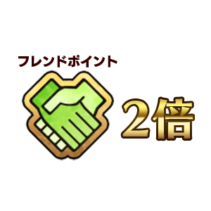 |
|
以期間限定在達文西工房的「魔力稜鏡交換」追加下述的道具。 ◆交換期間◆ |
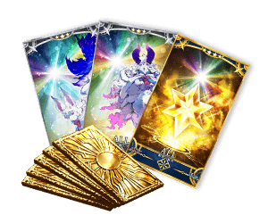 |
| 追加道具 | 能交換 次數 |
1次交換所需的 魔力稜鏡數 |
|---|---|---|
| 【期間限定】呼符 | 5次 | 20個 |
| 【期間限定】叡智的猛火ALL★4(SR)10張組 | 5次 | 40個 |
| 【期間限定】英靈結晶・星之芙芙ALL★3(HP) | 20次 | 15個 |
| 【期間限定】英靈結晶・太陽之芙芙ALL★3(ATK) | 20次 | 15個 |
在達文西工房內的「Servant保管欄位增加」「概念禮裝保管欄位增加」，可消耗魔力稜鏡來追加的保管欄位上限數，再追加10次份(合計50欄位)追加いたします。
【保管欄位的擴張數】
| 對象保管欄位 | 剩餘次數 | 最大擴張時 |
|---|---|---|
| Servant保管欄位增加 | 30次→40次(10次份追加) | 250→300(50欄位追加) |
| 概念禮裝保管欄位增加 | 30次→40次(10次份追加) | 250→300(50欄位追加) |
※請注意在Servant保管欄位的擴張及概念禮裝保管欄位的擴張，1次的擴張需要魔力稜鏡50個。
下述的期間中，在「Master任務」內以期間限定追加「【1300萬DL突破記念】任務」。
◆舉辦期間◆
2018年5月30日(三) 17:00～6月6日(三) 11:59
◆領取期間◆
2018年5月30日(三) 17:00～6月17日(日) 22:59
| 任務名稱 | 任務達成 可能期間 |
任務 達成報酬 |
|---|---|---|
| 【1300萬DL突破記念】
任何「骸骨兵・狩獵」 關卡通過1次 |
5/30(三) 17:00～ 5/31(四) 16:59 |
聖晶石 1個 |
| 【1300萬DL突破記念】
任何「蛇妖・狩獵」 關卡通過1次 |
5/31(四) 17:00～ 6/1(五) 16:59 |
聖晶石 1個 |
| 【1300萬DL突破記念】
任何「九頭蛇・狩獵」 關卡通過1次 |
6/1(五) 17:00～ 6/2(六) 16:59 |
聖晶石 1個 |
| 【1300萬DL突破記念】
任何「奇美拉・狩獵」 關卡通過1次 |
6/2(六) 17:00～ 6/3(日) 16:59 |
聖晶石 1個 |
| 【1300萬DL突破記念】
任何「龍・狩獵」 關卡通過1次 |
6/3(日) 17:00～ 6/4(一) 16:59 |
聖晶石 1個 |
| 【1300萬DL突破記念】
任何「自動人偶・狩獵」 關卡通過1次 |
6/4(一) 17:00～ 6/6(三) 11:59 |
聖晶石 1個 |
| 任務名稱 | 任務達成報酬 |
|---|---|
| 【1300萬DL突破記念】
通過1個狩獵關卡通過任務 |
1,000,000QP |
| 【1300萬DL突破記念】
通過2個狩獵關卡通過任務 |
2,000,000QP |
| 【1300萬DL突破記念】
通過3個狩獵關卡通過任務 |
聖晶石 3個 |
| 【1300萬DL突破記念】
通過4個狩獵關卡通過任務 |
3,000,000QP |
| 【1300萬DL突破記念】
通過5個狩獵關卡通過任務 |
聖晶石 3個 |
| 【1300萬DL突破記念】
通過所有狩獵關卡通過任務 |
4,000,000QP |
※請注意設定能達成任務期間設定的任務，超過對象狩獵關卡期間的話就無法達成。
※請注意根據狩獵關卡的開始時間點及通過狀況可能會有無法達成所有「1300萬DL突破記念」任務的情況。
※請注意舉辦期間與領取期間有所差異。
※請注意與每週日23:00更新的普通任務(Weekly)不同欄位，超過領取期間的話無法入手報酬。
※就算通過「【1300萬DL突破記念】任務」，也不會計算在普通任務(Weekly)的任務進行度。
現在永久舉辦的AP消耗量1/2狀態，再追加AP消耗量1/2，主線關卡第1部(從特異點F到終局特異點)的AP消耗量以期間限定變成1/4！
今後，在預定舉辦的新期間限定活動和期間限定宣傳活動中，會有參加條件為通過主線關卡第1部的情況。
尚未通過至主線關卡第1部的Master，無論如何請藉此機會通過至終局特異點！
◆舉辦期間◆
2018年5月30日(三) 17:00～6月13日(三) 11:59
◆對象關卡◆
主線關卡第1部(從特異點F到終局特異點)
※請注意自由關卡為對象外。
※在戰鬥中撤退的情況AP的消耗也是1/4。
在「編成」「強化」「商店」畫面的一部份項目中，追加可概括選擇Servant和概念禮裝選擇「拖曳選擇功能」。
另外，在拖曳選擇中選擇的對象再度拖曳選擇的話，可整個解除選擇的狀態解除。
※在隊伍編成的Servant或概念禮裝不包含在拖曳選擇的對象。
※在靈基保管室以外的畫面，變成上鎖狀態及挑選狀態的Servant或概念禮裝不包含在拖曳選擇的對象。
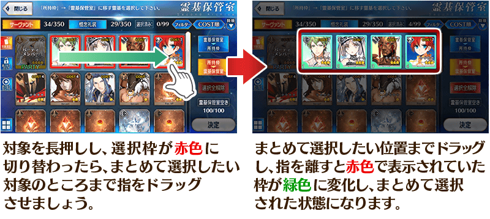
能拖曳選擇的對象畫面如下。
| 項目 | 對象畫面 | 最大選擇可能數 |
|---|---|---|
| 編成 | 靈基保管室(Servant) | 99 |
| 靈基保管室(概念禮裝) | 99 | |
| 強化 | Servant強化(素材選擇) | 20 |
| 概念禮裝強化&進化(素材選擇) | 20 | |
| 商店 | 靈基變還(Servant) | 99 |
| 靈基變還(概念禮裝) | 99 |
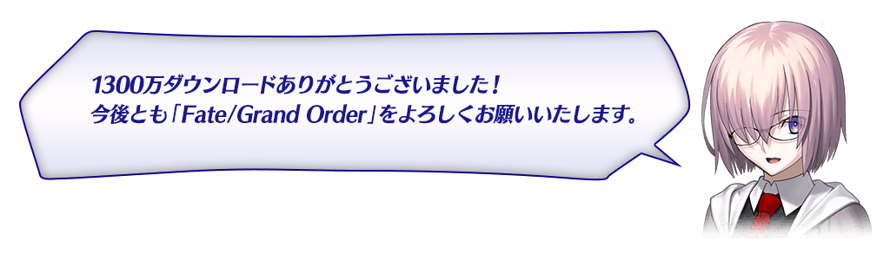
◆「1300萬DL記念Pick Up召喚(每日交替)」期間◆
期間:2018年5月30日(三) 17:00～6月13日(三) 11:59
舉辦期間限定「1300萬DL記念Pick Up召喚(每日交替)」！
為了記念1300萬DL突破「★5(SSR)玉藻前(Lancer)」「★4(SR)安妮・伯妮＆瑪莉・瑞德(Archer)」「★4(SR)清姬(Lancer)」「★4(SR)莫德雷德(Rider)」以期間限定登場！
本次Pick Up上述4位Servant！
「★4(SR)安妮・伯妮＆瑪莉・瑞德(Archer)」「★4(SR)清姬(Lancer)」「★4(SR)莫德雷德(Rider)」以每日交替Pick Up、「★5(SSR)玉藻前(Lancer)」常駐Pick Up！
※玉藻前(Lancer)、安妮・伯妮＆瑪莉・瑞德(Archer)、清姬(Lancer)、莫德雷德(Rider)在Pick Up期間結束後不會追加到故事召喚。
詳情請在聖晶石召喚畫面左下的召喚詳細確認。
另外，「夏日！ 海洋！ 開拓！ FGO 2016 Summer Pick Up召喚1」限定概念禮裝「★5(SSR)パイレーツ・パーティー！」「★4(SR)トワイライト・メモリー」「★3(R)シャイニー・ゴッデス」也以期間限定登場！
※「★3(R)シャイニー・ゴッデス」在Pick Up期間中，也能在友情點數召喚獲得。
※請注意自友情點數召喚抽出「★3(R)シャイニー・ゴッデス」在自動變還設定登錄★3(R)概念禮裝的情況，會變成自動變還的對象。
Pick Up期間中，期間限定Servant、期間限定概念禮裝的出現機率提升！
10次召喚中確定1張★4(SR)以上和確定1位★3(R)以上的Servant！
※確定★4(SR)以上包含Servant和概念禮裝。
| 每日交替Pick Up期間 | 每日交替Pick Up內容 |
|---|---|
| 5月30日(三) 17:00～ 6月2日(六) 22:59 |
玉藻前(Lancer) 安妮・伯妮＆瑪莉・瑞德(Archer) 清姬(Lancer) 莫德雷德(Rider) |
| 6月2日(六) 23:00～6月3日(日) 22:59 | 玉藻前(Lancer) 安妮・伯妮＆瑪莉・瑞德(Archer) |
| 6月3日(日) 23:00～6月4日(一) 22:59 | 玉藻前(Lancer) 清姬(Lancer) |
| 6月4日(一) 23:00～6月5日(二) 22:59 | 玉藻前(Lancer) 莫德雷德(Rider) |
| 6月5日(二) 23:00～ 6月6日(三) 6月7日(四) 22:59 |
玉藻前(Lancer) 安妮・伯妮＆瑪莉・瑞德(Archer) 清姬(Lancer) 莫德雷德(Rider) |
| 6月7日(四) 23:00～6月8日(五) 22:59 | 玉藻前(Lancer) 安妮・伯妮＆瑪莉・瑞德(Archer) |
| 6月8日(五) 23:00～6月9日(六) 22:59 | 玉藻前(Lancer) 清姬(Lancer) |
| 6月9日(六) 23:00～6月10日(日) 22:59 | 玉藻前(Lancer) 莫德雷德(Rider) |
| 6月10日(日) 23:00～ 6月13日(三) 11:59 |
玉藻前(Lancer) 安妮・伯妮＆瑪莉・瑞德(Archer) 清姬(Lancer) 莫德雷德(Rider) |
※請注意會以每日交替變更Pick Up的Servant。
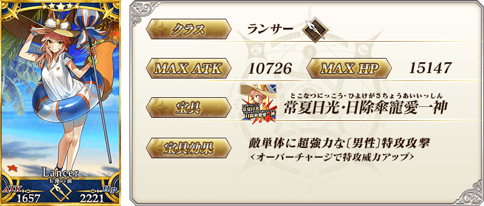
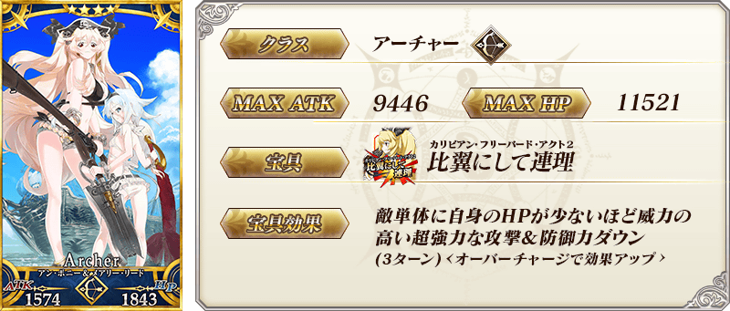
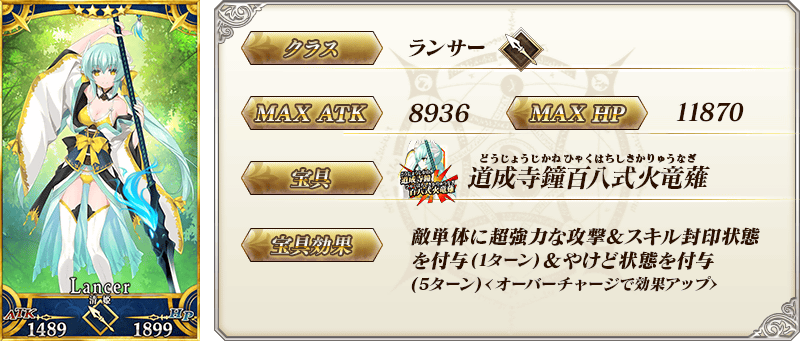

| 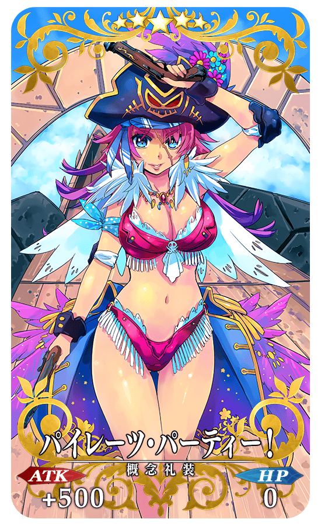 |
★★★★★SSR |
| 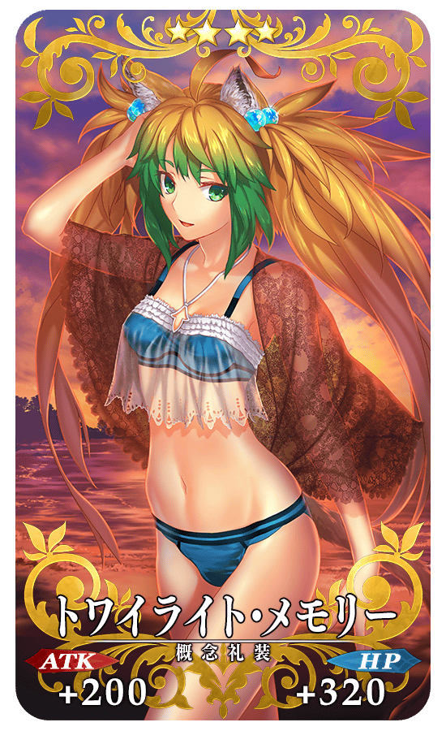 |
★★★★SR |
| 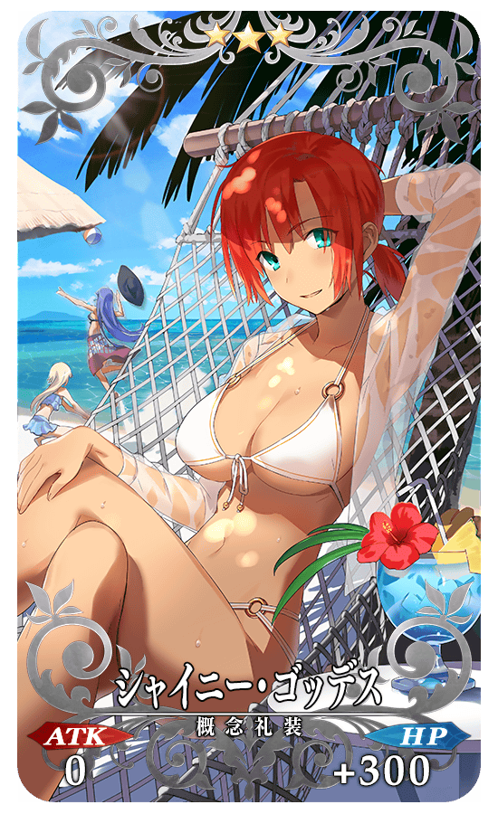 |
★★★R |
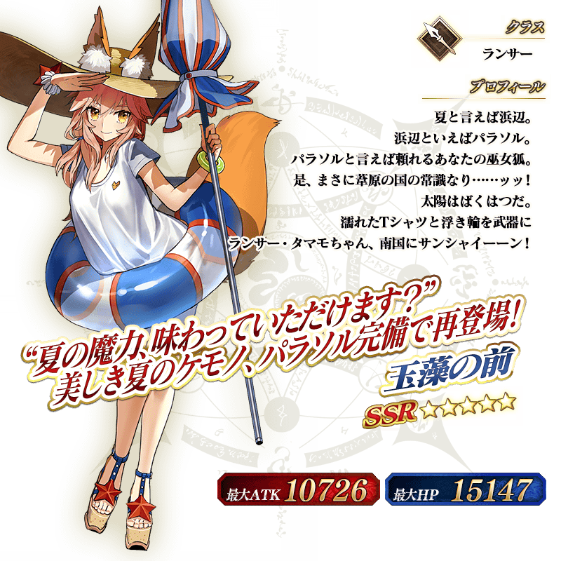
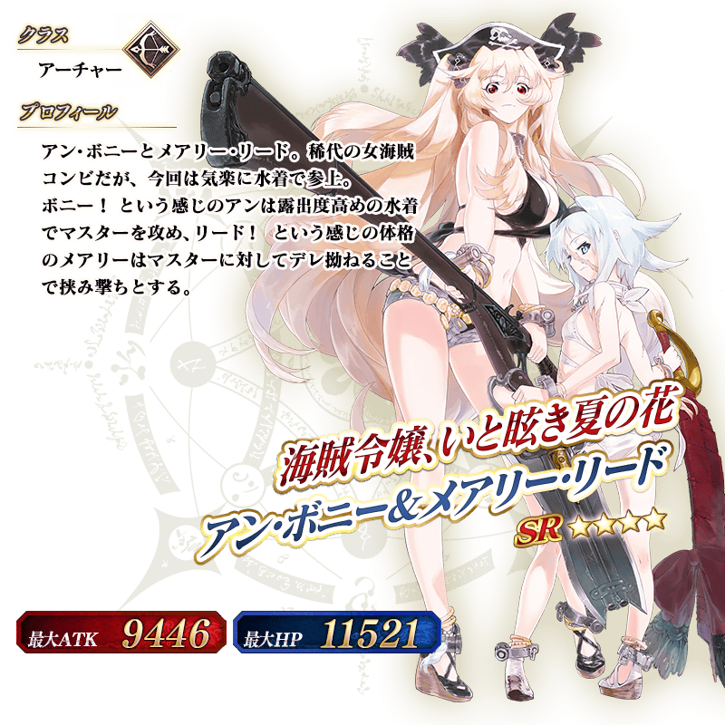
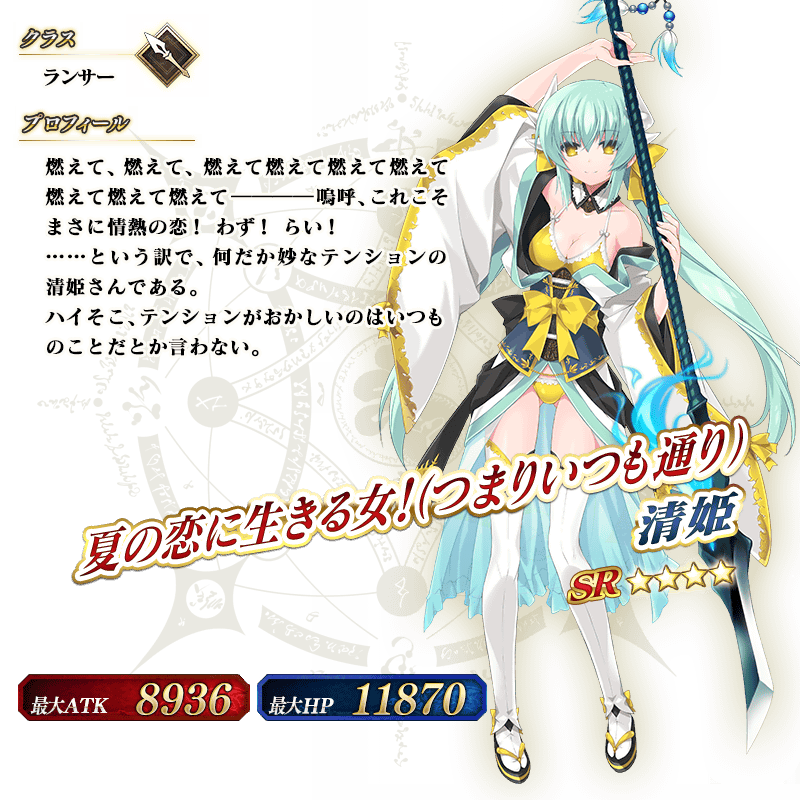
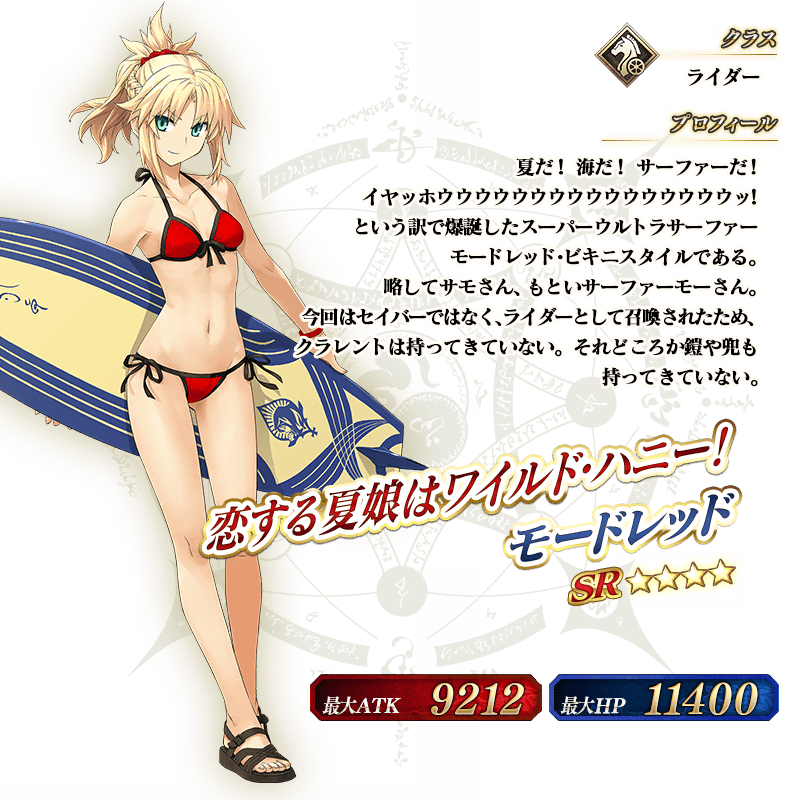
介紹期間限定Servant玉藻前(Lancer)、安妮・伯妮＆瑪莉・瑞德(Archer)、清姬(Lancer)、莫德雷德(Rider)的寶具演出！
在「Fate/Grand Order」官方網站內的公告中，公開了「★5(SSR)玉藻前(Lancer)」「★4(SR)安妮・伯妮＆瑪莉・瑞德(Archer)」「★4(SR)清姬(Lancer)」「★4(SR)莫德雷德(Rider)」的寶具演出。敬請確認。